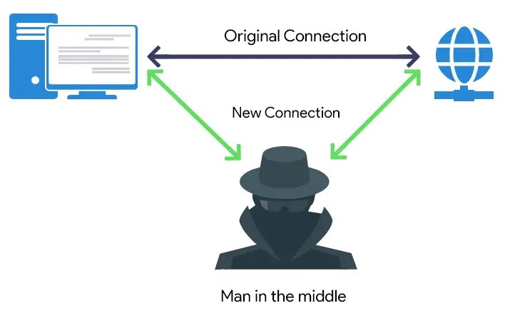
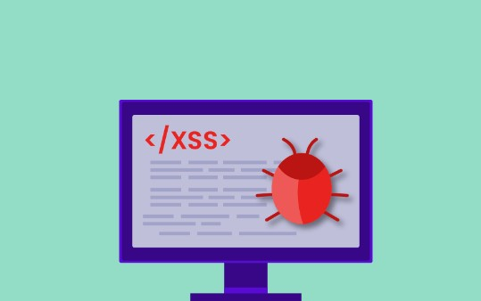
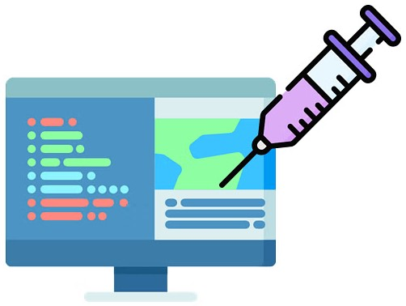
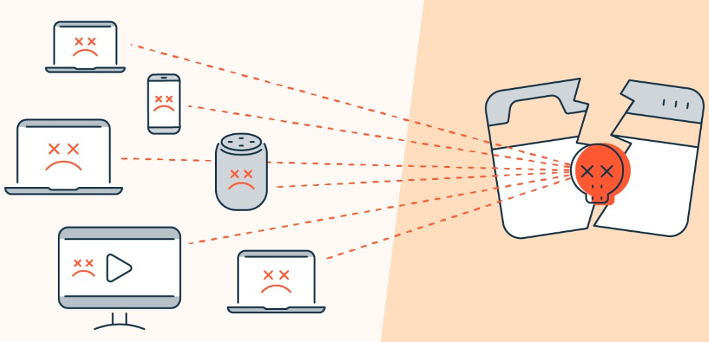
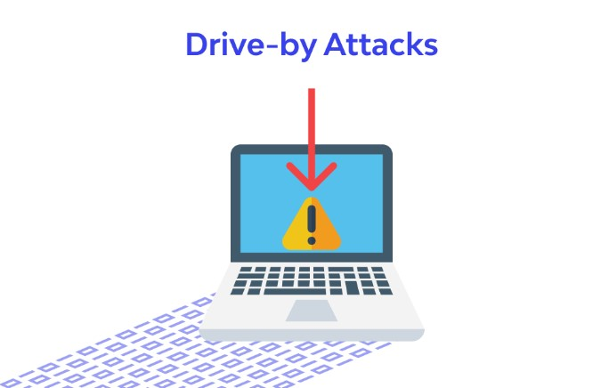

| Activity | Date |
|---|---|
| First day to enrol for re-enrolling (continuing) students | 21 Nov 2022 |
| Orientation | 18 Jul 2023 |
| Lectures Commence (weeks 1-9) | 24 Jul - 22 Sep 2023 |
| Last day to enrol / add subjects yourself | 04 Aug 2023 |
| Last day to enrol / add subjects with Head of Students approval | 11 Aug 2023 |
CENSUS DATE
|
31 Aug 2023 |
| Student Services and Amenities Fees Due | 01 Sep 2023 |
| Name | Web Attacks |
|---|---|
| Man-in-the-middle  Source: https://beaglesecurity.com/ |
Websites lacking SSL certificates are susceptible to Man-in-the-Middle attacks, where unencrypted data exchanged between
a client and server becomes vulnerable to interception and potential reading by attackers. In the event of a Man-in-the-Middle
attack, personal data and credentials are at risk of compromise. To enhance security, implementing SSL certificates is crucial
for encrypting data during transit, safeguarding against such potential threats. Source: https://beaglesecurity.com/ |
| Cross-site scripting (XSS)  Source: https://www.indusface.com/blog/what-is-xss/ |
Browsers or applications can be deceived into executing malicious client-side scripts, typically injected when a user
unknowingly clicks on a malicious link. This can lead to various adverse outcomes, including the installation of malware,
redirection to spoofed sites, or compromise of sensitive data. Source: https://www.tripwire.com/ |
| SQL injection  Source: https://www.simplilearn.com/ |
Numerous websites employ a SQL database backend. A SQL injection attack occurs when a query is maliciously executed through a client's
input method. Vulnerable SQL systems are at risk of having sensitive data compromised, experiencing modifications or deletions in database
content, executing DBMS system commands, and, in some instances, issuing commands to the operating system. Source: https://owasp.org/www-community/attacks/SQL_Injection |
| DDoS (Distributed Denial-of-Service)  Source: https://www.avast.com |
DDoS attacks inundate target systems with an overwhelming volume of requests, orchestrated from numerous compromised systems simultaneously.
This overwhelms the target web servers, saturating the inbound network and causing a service outage. DDoS attacks may be employed strategically
to divert attention away from other malicious activities by the attackers. Source: https://www.cloudflare.com/en-gb/learning/ddos/what-is-a-ddos-attack/ |
| Directory Traversal Source: https://www.invicti.com/ |
Websites are organized within directories on a web server, forming a directory tree structure. In the presence of a Directory Traversal vulnerability,
attackers can manipulate URL/input variables/file paths, gaining unauthorized access to directories beyond the website's scope. This could potentially
result in compromised data, modifications or deletions of system files causing outages, and the exposure of intelligence about the environment, paving
the way for further cyber attacks. Source: https://www.imperva.com/learn/application-security/directory-traversal |
| Cross-site request forgery Source: https://hackersonlineclub.com/ |
Cross-site request forgery is a web vulnerability that tricks a web browser into performing actions on a site using the identity of an end user. Hackers
embed these malicious actions into emails or links, deceiving users into unwittingly executing these requests. Successful attacks depend on specific conditions,
including the target site using cookie session handling, predictable request parameters, and a target action. The consequences of such an attack can be severe,
potentially leading to theft, due to compromised credentials. Source: https://www.okta.com/au/identity-101/csrf-attack/ |
| File upload attacks Source: https://academy.hackthebox.com/ |
File upload vulnerabilities arise when web servers allow users to upload files without adequate validation of the files name, type, content, size. Insufficient
validation can permit upload of malicious files, and in severe cases, even server-side scripts. The impacts can lead to serious scenarios such as an attacker
gaining full access. Source: https://portswigger.net/web-security/file-upload |
| Fuzzing attack Source: |
Fuzzing is a software testing technique that identifies software bugs by injecting malformed data. Attackers can employ the same technique on web applications
to uncover vulnerabilities, utilizing vectors such as URLs, forms, user content, and HTTP requests. The exposure of vulnerabilities through fuzzing can pave the
way for subsequent attacks. Source: https://www.centextech.com/blog/post/what-is-a-fuzzing-attack |
| Drive-by Download  Source: https://www.wallarm.com/ |
Drive-by download refers to the inadvertent downloading of malicious code. A compromised website can be tainted by malware, and no user action is necessary
to trigger the download—simply visiting the site could exploit device vulnerabilities. Source: https://www.kaspersky.com/resource-center/definitions/drive-by-download |
| Password-based attacks Source: https://www.lifars.com/ |
A diverse array of password-based attacks exists, with the most prevalent being brute force (guessing) and credential stuffing (using compromised credentials to
authenticate across multiple systems). Effective prevention strategies involve enforcing the use of complex passwords and regular password changes, complimenting
passwords with Multi-Factor Authentication (MFA), code signing, and adherence to the principle of least privileged access. Source: https://www.tripwire.com/ |